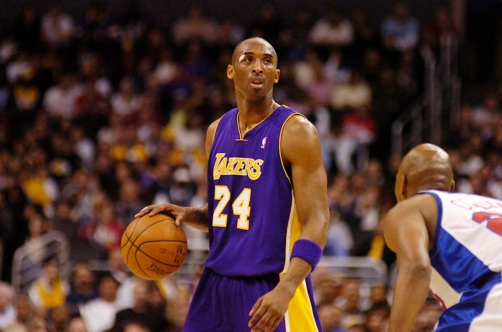
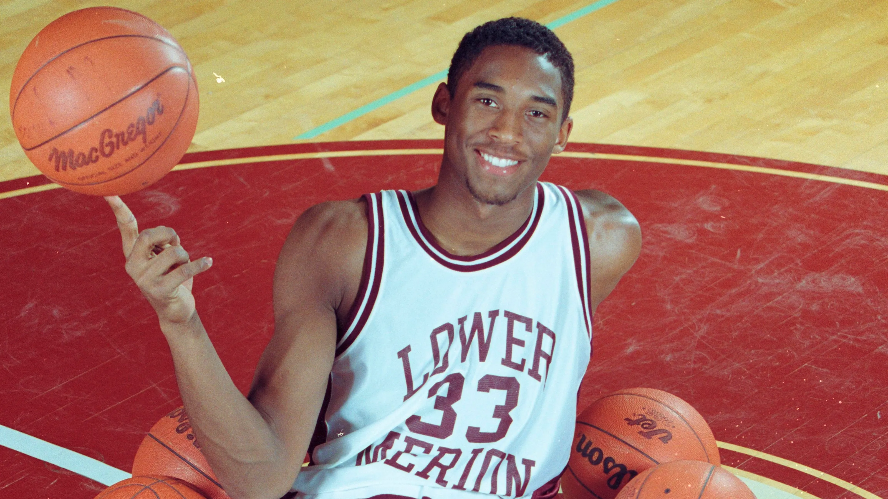
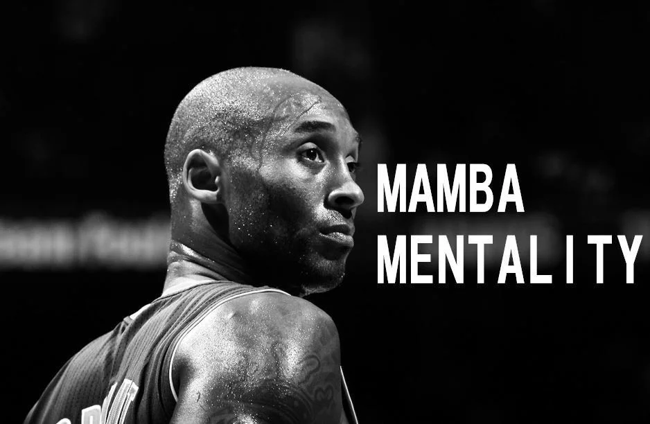
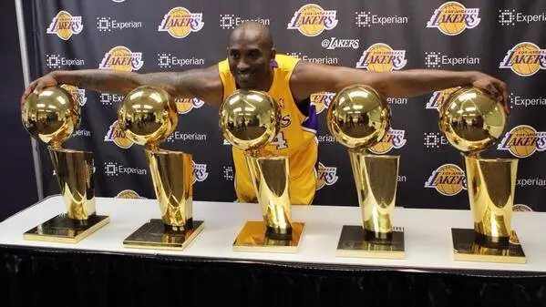
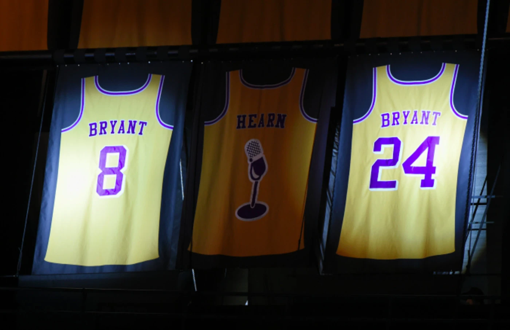
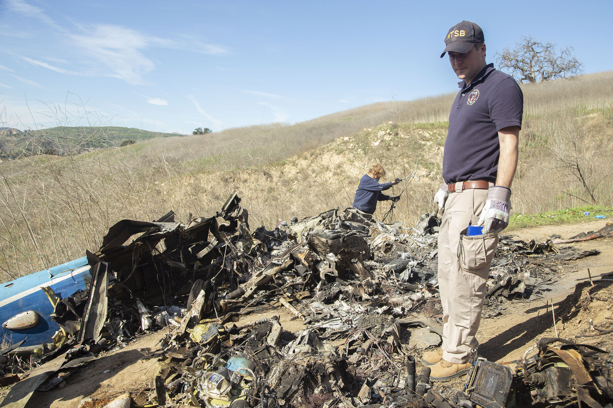

Kobe Bryant was born on August 23, 1978 in Philadelphia, Pennsylvania. Kobe Bryant was 1.83 meters tall in height. Kobe has a wife named Vanessa Bryant who is 40 years of age. Vanessa was born on May 5th, 1982. Kobe Bryant has two sisters named Sharia Bryant and Shaya Bryant. Shaya Bryant was born on July 30, 1977. Shaya is 45 years of age. Sharia Bryant was born on March 19, 1976. Sharia is 46 years of age. Kobe Bryant's father was Joe Bryant who was born on October 19, 1954. Kobe Bryant's mother is Pam Bryant who was born on February 8, 1959.
Kobe graduated high school in the year 1996. Kobe Bryant went to Lower Merion High School, Kobe was ranked 57th amongst the best high school ballers. Kobe first met Vanessa on the set of a music video in the year 1999. At the time Kobe was 20 and Vanessa was just 17 years of age still in high school. In the year 2005, Monica Squadrilli told the Los Angeles times, "Vanessa would bring pictures of Kobe to school and we'd be like, Oh my god". During Kobe Bryant's senior season of high school, he ended his high school career as Southeastern Pennsylvania's all time leading scorer at 2,883 points, surpassing both Wilt Chamberlain and Lionel Simmons. Kobe received several awards for his outstanding performance during his senior year at Lower Merion. Kobe had a 3.2 grade point average in highschool.
Kobe declared himself eligible for the NBA draft when he graduated straight from high school. The Charlotte Hornets chose him with the 13th pick of the 1996 draft. Since Kobe was the second youngest player in the league, the Charlotte Hornets underestimated Kobe and traded him to the Lakers. Kobe Bryant averaged 25 points per game, 4.7 assists, 5.2 rebounds, and 1.5 steals. Kobe's work ethic was unmatched. Kobe used to train six hours a day, six days a week. The six hours of training are divided into two hours of track work, two hours of basketball skills, and two hours of weight lifting which includes one hour of cardio. Nobody worked harder the Kobe. Kobe averaged over 1000 made shots a day during practice. By the end of his career, Kobe had 6,306 assists, 33,643 points, and 7,047 rebounds.
Kobe was the second youngest player to ever play in the NBA. Kobe is a 5x NBA champion (2002-2002, 2009, 2010), 2x NBA Finals MVP (2009, 2010), NBA Most Valuable Player (2008), 18x NBA All-star (1998, 2000-2016), 4x NBA All-Star Game MVP (2002, 2007, 2009, 2011), 11x All-NBA First Team (2002-2004, 2006-2013), 2x All-NBA Second Team (2000,2001), 2x All-NBA Third Team (1999, 2005), five championships, 15 All-Star Game appearences. Kobe Bryant has inspired millions to work towards their dream.
Kobe Bryant retired April 13, 2016. During retirement, Bryant's life included sports related ventures, Mamba Sports Academy facilities. He also coached Giannas's AAU basketball team. Kobe was just enjoying life, doing what he loved to do, spending time with his children.
Unfortuntely, Kobe Bryant died in a helicopter crash at January 26, 2020. The helicopter crash occured because the pilot made a "poor decision" to fly at "excessive airspeed", about 160 miles per hour into an area of poor visibility. The pilot lost the ability to control the helicopter and crashed into the ground. Kobe and his 13-year old daughter Gianna and seven others boarded the Sikorsky S-76B helicopter at John Wayn Airport. They were headed to youth basketball tournament at the Mamba Sports Academy. Kobe's last words on Twitter were "Continuing to move the game forward".
